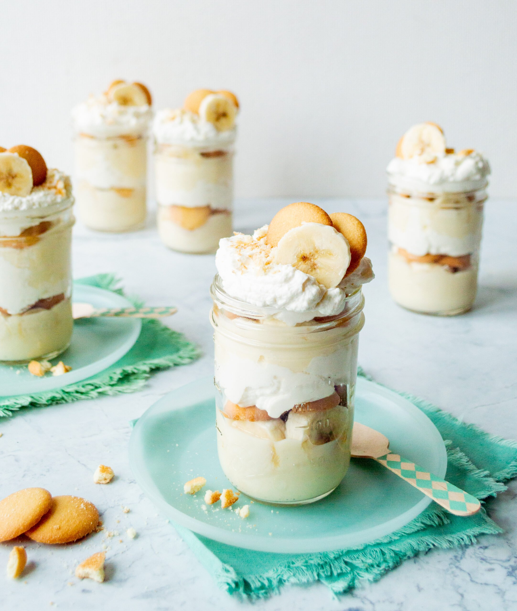

Home
Banana Pudding

This Krispy Kreme banana pudding makes a surprising switch for vanilla wafers: donuts.
And why not! It's every bit the cold, creamy, sweet treat you love, now with a twist.
Ingredients
- (3.4 ounce) boxes instant French vanilla pudding mix
- 2 cups milk
- 1 (8 ounce) package cream cheese, softened
- 1 (14 ounce) can condensed milk
- 16 ounces whipped topping
- 12 donuts, cut into 1-inch pieces
- 5 bananas, sliced, or more as needed
Steps
- Prepare pudding according to package directions and set aside.
- Combine cream cheese and condensed milk in a separate bowl
and beat using a hand mixer until smooth.
- Add pudding to the cream cheese mixture and stir until well combined
- Layer half of pudding mixture in a 9x13 dish
- Add a layer of bananas and half of donuts
- Pour remaining pudding mixture over bananas and donuts
- Top with whipped topping and remaining donuts.
- Keep refrigerated until ready to serve.